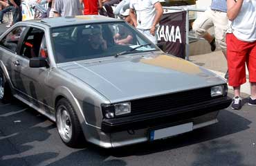

Extras
- Sportsitze
- getönte Scheiben
- Schiebe- Hubdach
Motor
- 4 Zylinder
Abgasanlage
- Serie mit S-Form Anschweißrohr
Bremse
- Serie
Felgen / Reifen
- Schmidt Revolution Modern Line, VA 7 x 14 ET 25, HA 7,5 x 14 ET 5
- Toyo Proxes T1S 195 / 45 - R14
Fahrwerk
- 80 / 60 Formel-K Federn
- gekürzte Lowtec Dämpfer
- Spurverbreiterung: VA 8mm, HA 15mm je Seite
- Wiechers 3 tlg. Domstrebe vorn
- polierte Domstrebe hinten
- Querlenkerstrebe
Sonstige Umbauten
Außen
- US Scheinwerfer ohne Zusatz-Fernlicht
- No-sign Grill (Eigenbau)
- schwarze Frontblinker mit Standlicht
- Zierleisten entfernt
- Einarmwischer (Eigenbau)
- Fenstergravur
Innen
- Wiechers Vollschalen
- Schroth H-Gurte
- 300 mm Sportlenkrad
- VDO Zusatzinstrumente
- Alu im Cockpit
- Heckausbau
- 5. Alufelge in Ersatzradmulde
- InPro Alarmanlage mit ZV
Motorraum
- div. Teile poliert bzw. lackiert
Musikanlage
- Clarion CD-Radio
- JBL Türsystem
- Canton 2-Wege System
- 30er Infinity Vega Woofer
- Magnat 360W 4-Kanal Endstufe
- Kenwood 500W 4-Kanal Endstufe
Kontakt
sven@vwclubms.de
 Sven´s Erfolge
Sven´s Erfolge
2. Platz Scirocco-Klasse Weihe 2002
2. Platz Scirocco-Klasse Osterholz-Schambeck 2003
2. Platz Scirocco-Klasse Bergkamen 2003
4. Platz Scirocco-/Corrade-Klasse Hamm 2003
3. Platz Scirocco-Klasse "Alles VW" Kaunitz 2003